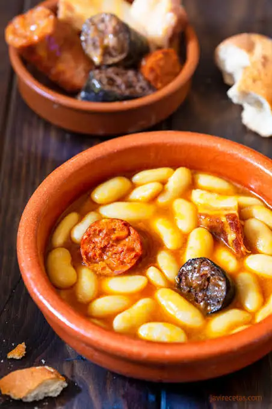

Fabada asturiana tradicional
Ingredientes
- 500 g de fabes asturianas
- 2 chorizos asturianos
- 2 morcillas de cebolla
- 200 g de panceta
- 1 cebolla
- 4 dientes de ajo
- Aceite de oliva
- Sal
Preparación
- Poner las fabes en remojo la noche anterior.
- En una olla, cubrir las fabes con agua fría.
- Añadir chorizo, morcilla, panceta, cebolla y ajos.
- Cocer a fuego lento durante 2-3 horas.
- Rectificar de sal si es necesario.
- Servir caliente con el compango troceado.